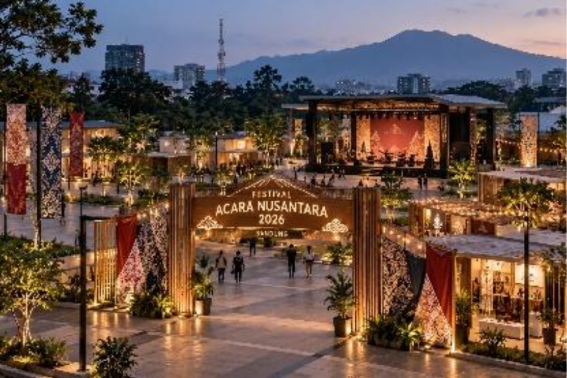

Explore Science, Inspire the Future
Nama Acara: Festival Sains Nusantara 2026
Tema: Explore Science, Inspire the Future
Penyelenggara: Nusantara Science Community
Festival Sains Nusantara 2026 merupakan kegiatan yang menghadirkan seminar, workshop, dan kompetensi sains bagi pelajar, mahasiswa, dan masyarakat umum.

Peserta dapat mengikuti kegiatan eksperimen dan pembelajaran sains secara langsung melalui workshop yang disediakan.
Kompetisi memberikan kesempatan kepada peserta untuk menampilkan ide dan proyek sains mereka.
Seminar menghadirkan pembicara untuk berbagi pengetahuan tentang perkembangan sains dan teknologi terkini.